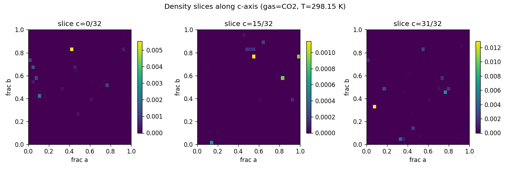
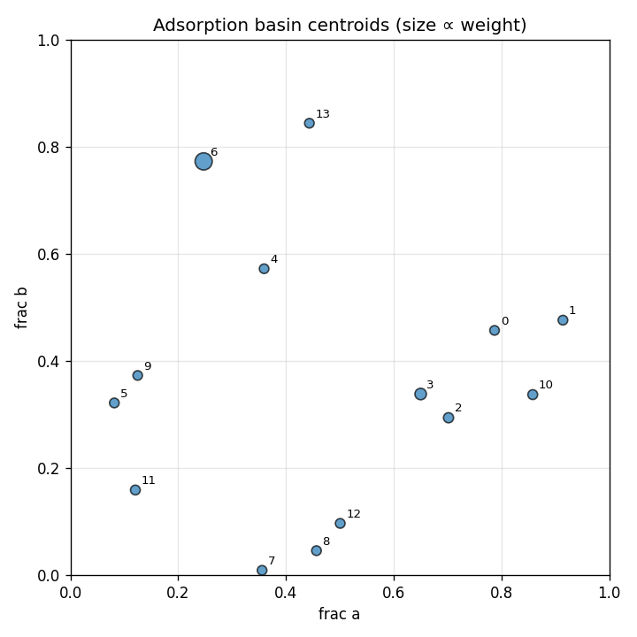

3aaf732faff4f48985b221ab420e2af2d433e62206fbeec06ce5fc1a190d5095
| basin_id | count | weight | mean_energy_eV | spread_A | accessible_fraction |
|---|---|---|---|---|---|
| 0 | 3 | 0.0081 | -0.1408 | 0.5690 | 1.000 |
| 1 | 1 | 0.0121 | -0.1645 | 0.0000 | 1.000 |
| 2 | 1 | 0.0337 | -0.1908 | 0.0000 | 1.000 |
| 3 | 3 | 0.1043 | -0.2198 | 0.0000 | 1.000 |
| 4 | 3 | 0.0090 | -0.1332 | 0.5038 | 1.000 |
| 5 | 3 | 0.0129 | -0.1661 | 0.0000 | 1.000 |
| 6 | 1 | 0.4811 | -0.2591 | 0.0000 | 1.000 |
| 7 | 3 | 0.0116 | -0.1369 | 0.5381 | 1.000 |
| 8 | 1 | 0.0123 | -0.1649 | 0.0000 | 1.000 |
| 9 | 1 | 0.0078 | -0.1532 | 0.0000 | 1.000 |
| 10 | 1 | 0.0210 | -0.1786 | 0.0000 | 1.000 |
| 11 | 1 | 0.0189 | -0.1759 | 0.0000 | 1.000 |
| 12 | 1 | 0.0131 | -0.1665 | 0.0000 | 1.000 |
| 13 | 4 | 0.0094 | -0.1384 | 0.7769 | 1.000 |

Fm-3m (#225),
confidence 0.13, members: [0]
Fm-3m (#225),
confidence 0.13, members: [1]
Fm-3m (#225),
confidence 0.13, members: [2]
Fm-3m (#225),
confidence 0.13, members: [3]
Fm-3m (#225),
confidence 0.13, members: [4, 7]
Fm-3m (#225),
confidence 0.13, members: [5]
Fm-3m (#225),
confidence 0.13, members: [6]
Fm-3m (#225),
confidence 0.13, members: [8]
Fm-3m (#225),
confidence 0.13, members: [9]
Fm-3m (#225),
confidence 0.13, members: [10]
Fm-3m (#225),
confidence 0.13, members: [11]
Fm-3m (#225),
confidence 0.13, members: [12]
Fm-3m (#225),
confidence 0.13, members: [13]
No perturbations applied to this run.
No robustness comparison run.